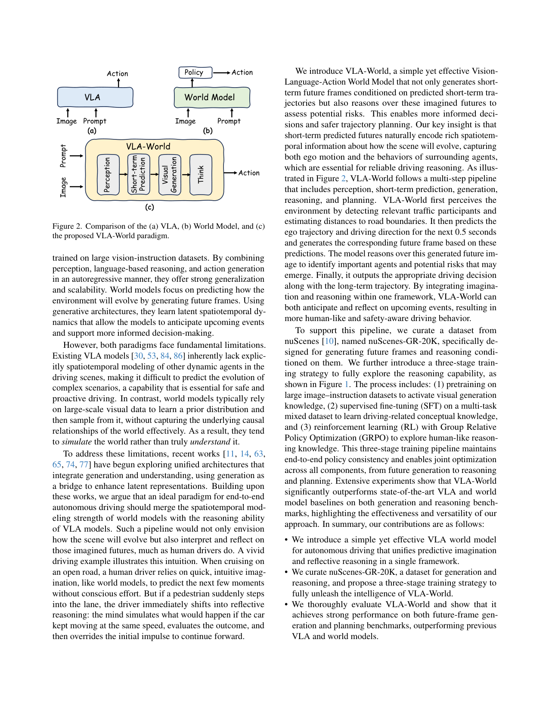
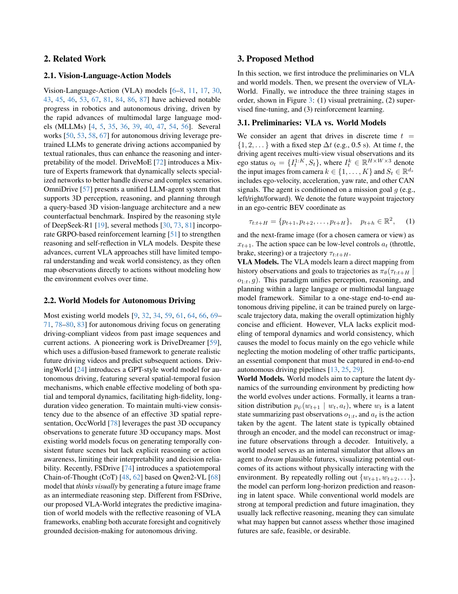
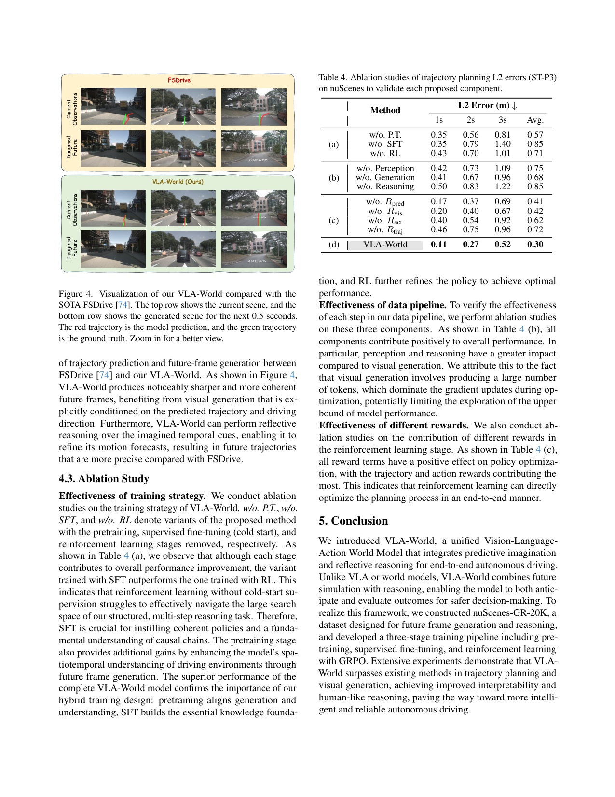
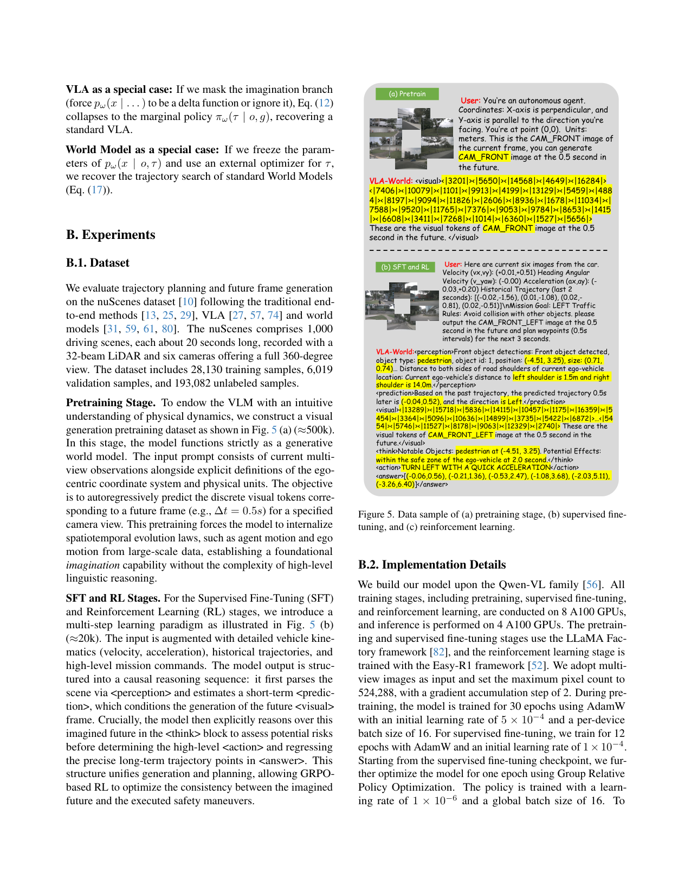
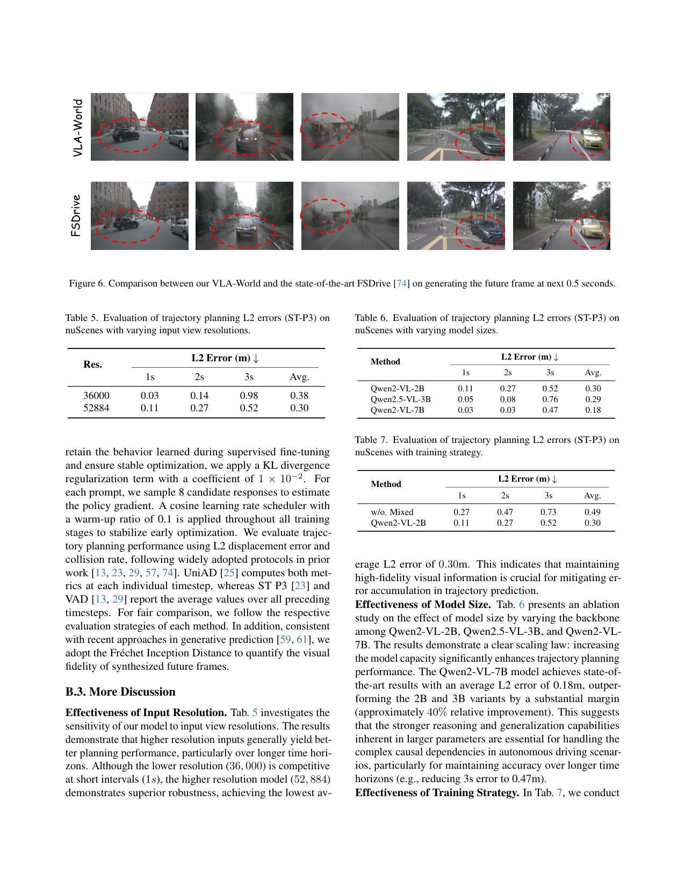
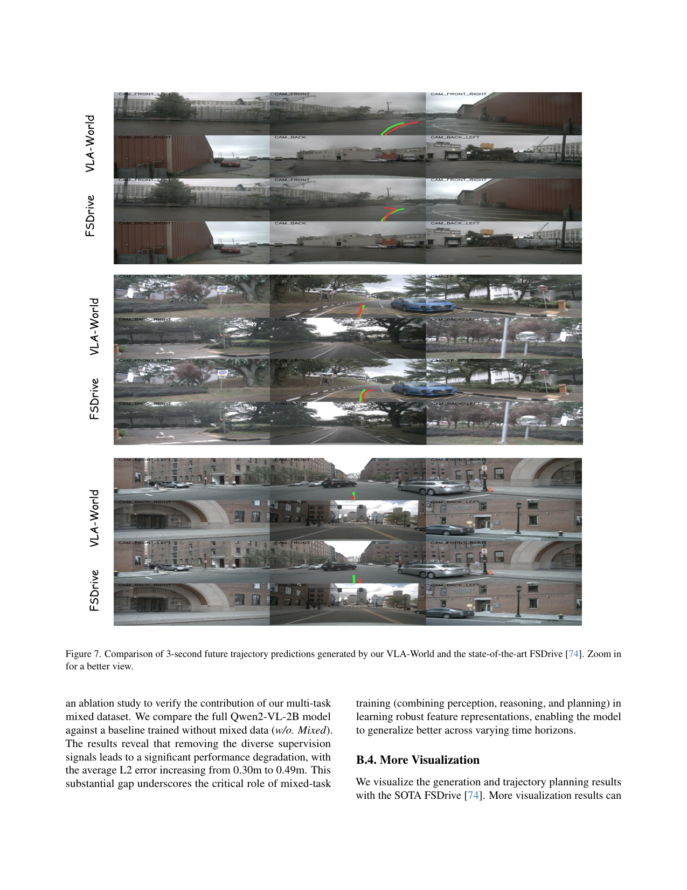

把自动驾驶的 VLA 和世界模型合并:先用短期轨迹预测引导生成下一帧未来图像,再对这个自己想象出来的未来帧做反思推理修正长期轨迹,用 Qwen2-VL-2B + VQGAN 自回归出视觉 token,三阶段(预训练→SFT→GRPO)训练。
问题
要解决什么：自动驾驶里 VLA 直接从观测出动作,缺对其它动态 agent 的时空建模,没前瞻;世界模型能生成未来但只能'模拟'不能'推理评估'想象出来的未来。VLA-World 要把世界模型的预测想象和 VLA 的反思推理合并:先想象未来帧,再对自己想象出来的未来做反思,修正轨迹。
为什么 prior work 不够：VLA 方法(ELM/OmniDrive/DriveMoDrive 等)直接映射观测到轨迹,缺显式时空动态建模,难以预测复杂场景演化。世界模型(DriveDreamer/DrivingWorld/OccWorld 等)能生成未来但缺反思推理,只模拟不评估。FSDrive 虽引入未来帧作 CoT 中间步,但只生成前视、直接回归 waypoint 不评估物理可行性,且缺 RL 强化反思链。
输入 / 输出
输入
| 名称 | 类型 | 说明 |
|---|---|---|
| multi-view observations o_t | image | nuScenes 6 个相机视角图像 I^k_t;经 Qwen2-VL 视觉编码器编码 |
| ego status S_t | vector | 自车速度、加速度、yaw rate 等 CAN 信号 |
| mission goal g | text/discrete | 导航指令 left/right/forward |
输出
| 名称 | 类型 | 说明 |
|---|---|---|
| perception results | text | 检测周围动态 agent(车、行人)、3D 位置、运动路径、路肩距离、可行驶区域边界 |
| short-term prediction | text+trajectory | 下 0.5s 的 waypoint 和行驶方向,作为生成未来帧的条件 |
| imagined future frame x̂_{t+1} | image | VQGAN 自回归生成的下一帧视觉 token 序列(任一视角,如 CAM_FRONT_LEFT 0.5s later),128×192 |
| reflective reasoning | text | 对想象未来帧的反思:识别重要 agent、潜在风险、安全裕度 |
| final trajectory τ̃_{t:t+H} | trajectory | 修正后的 3s horizon ego 轨迹,0.5s 间隔,共 6 个 waypoint(BEV 坐标) |
控制频率：推理 step 0.5s;轨迹 horizon 3s(6 个 waypoint);nuScenes 2Hz 采样;8×80GB GPU 训练
输入拼接 protocol
<bos_obs>[ Qwen2VL(I^1_t...I^6_t, S_t) ]<eos_obs><bos_goal>[ g ]<eos_goal><bos_perception>[ 检测+3D位置+路肩距离 文本 ]<eos_perception><bos_prediction>[ 0.5s waypoint + direction 文本 ]<eos_prediction><bos_visual>[ VQGAN token 序列 q^k_1...q^k_N (生成未来帧) ]<eos_visual><bos_think>[ 反思文本:重要agent+风险 ]<eos_think><bos_action>[ 高层动作 ]<eos_action><bos_answer>[ 3s 轨迹 waypoint 列表 ]<eos_answer>
逐 token 解释:三个坑:
1) language(goal/perception/prediction/think/action)全部是自回归 token 序列拼接,这点和 DreamZero/Motus 的 cross-attention 注入完全不同——VLA-World 走纯 LLM 自回归范式,所有模态(包括视觉生成)都是 next-token prediction。视觉未来帧是 VQGAN 离散 token,不是连续 latent diffusion。
2) 多视角是序列拼接(6 个视角的视觉 token 都在序列里),且生成时可指定任一视角——多视角一致性靠 Stage1 预训练显式约束(不同于 FSDrive 只生前视)。
3) 训练和推理序列结构一致,但三阶段侧重点不同:Stage1 只激活视觉生成(只到
数据集
| 数据 | 规模 | 备注 |
|---|---|---|
| nuScenes-GR-20K(自建) | 20K 样本 | 从 nuScenes 衍生,专为生成未来帧+条件推理设计,SFT 和 RL 阶段用 |
| nuScenes(主评测) | 1000 scenes | 标准自动驾驶 benchmark,6 相机,2Hz,带 3D 标注;L2 误差和 collision rate 评测 |
| 图像-指令预训练数据 | 480k(图1) | Stage1 视觉生成激活,大规模图像-指令对齐,继承自 FSDrive 对齐策略 |
架构（摘要）
主干与结构
backbone：Qwen2-VL-2B(多模态 LLM,初始化自 FSDrive 对齐策略)+ VQGAN(视觉 tokenizer,离散 codebook)
参数：2B(Qwen2-VL-2B);VQGAN tokenizer 离散化图像
类型：自回归 next-token prediction VLM + VQGAN 离散视觉生成 + 三阶段训练(预训练/SFT/GRPO)
关键组件
- Perception 模块:6 相机视角 + ego status → 检测动态 agent、3D 位置、路肩距离、可行驶区域,输出结构化 scene-level world state
- Short-term Prediction 模块:ego 历史状态 + goal → 下 0.5s waypoint + 方向(物理动力学:惯性加速度 + 意图加速度融合)
- Condition-guided Generation 模块:VQGAN 自回归生成未来帧视觉 token,条件是 o_{1:t} + 短期预测 τ̂_{t+1},可指定任一视角
- Thinking with Visual Tokens 模块:对想象未来帧做反思推理,识别重要 agent、风险、安全裕度
- Action & Trajectory Planning 模块:输出高层动作 + 3s horizon 修正轨迹(0.5s 间隔,6 个 BEV waypoint)
- GRPO 强化学习:value-free,组内归一化优势,5 个 rule-based reward(格式/短期预测/视觉约束/动作F1/轨迹)
为什么这样设计
用纯自回归 next-token 范式统一感知、生成、推理、规划——所有模态(包括视觉未来帧)都是 token,一套 Qwen2-VL 主干搞定。短期轨迹引导生成未来帧,是为了把高维未来采样到'合理可信的空间',再对这个具体未来做反思,而不是盲目 rollout。三阶段训练对应三种知识:Stage1 生成知识(冷启动理解世界),Stage2 概念知识(SFT 建因果链),Stage3 推理知识(GRPO 探索最优策略)。VQGAN 离散视觉 token 而非连续 latent,是为了和 LLM 自回归范式天然兼容。
数值 sense
| 项 | 值 |
|---|---|
| DiT 规格 | Qwen2-VL-2B 主干(2B 参数,VLM 标准 transformer);VQGAN tokenizer 离散 codebook,图像→离散 token 序列 |
| 分辨率 | 生成图像 128×192(FSDrive 同款);输入 6 相机视角 nuScenes 原生分辨率 |
| VAE | VQGAN(非 VAE):图像离散化为 codebook token 序列,每个 token 是 codebook 一个 entry;无连续 latent 压缩比概念,token 数 = N(论文未给精确 N) |
| 每帧 latent 维 | VQGAN codebook token 序列,每帧 N 个离散 token;128×192 图像典型 ~256-1024 token 量级(具体 N 论文未明示) |
| Chunk | 推理 step 0.5s;轨迹 horizon 3s = 6 个 waypoint(0.5s 间隔);nuScenes 2Hz 采样 |
| 上下文 | o_{1:t} 历史观测(多帧)+ ego status + goal;具体历史长度论文未明示,nuScenes 标准用过去 0.5-2s |
| 动作 | 轨迹 waypoint(BEV 2D 坐标 p∈R²);高层动作为离散 manoeuvre(forward/left/right + keep/acc/dec/stop) |
| 训练 | Stage1 预训练:30 epochs, AdamW lr 5e-4, per-device batch 16, 8×80GB GPU,480k 图像-指令。Stage2 SFT:12 epochs, AdamW lr 1e-4,nuScenes-GR-20K。Stage3 GRPO:1 epoch, lr 1e-6, global batch 16, 每 prompt 采样 8 候选。三阶段都在 8×80GB GPU 上。 |
→ 详见 Architecture tab。
关键结果
| 指标 | 值 | 最强 baseline | setup |
|---|---|---|---|
| nuScenes 规划 L2 avg (ST-P3 metrics, 带 ego-state) | 0.26m | FSDrive* 0.28m / OmniDrive* 0.33m / EMMA* 0.32m | 1s/2s/3s 平均,autoregressive methods |
| nuScenes Collision avg (ST-P3, 带 ego-state) | 0.08% | FSDrive* 0.10% / OmniDrive* 0.30% | 1s/2s/3s 平均 |
| nuScenes 规划 L2 avg (UniAD metrics, 带 ego-state) | 0.42m | FSDrive* 0.45m / OccWorld 1.40m | UniAD 协议 |
| nuScenes Collision avg (UniAD, 带 ego-state) | 0.12% | FSDrive* 0.16% / OccWorld 0.87% | UniAD 协议 |
| 未来帧生成 FID (nuScenes) | 9.8 | FSDrive 10.1 / GEM 10.5 / Doe-1 15.9 | 128×192 分辨率,autoregressive 生成 |
| 动作预测 F1 forward | 95.88% | Qwen2-VL-2B† 92.60% / Qwen2-VL-2B 62.43% | lateral 动作 |
| 动作预测 F1 left/right avg | 74.22% / 75.06% | Qwen2-VL-2B† 61.78% / 66.52% | 转向动作,VLA-World 提升最大 |
| 消融 w/o Reasoning L2 avg | 0.85m (w/o) | VLA-World full 0.30m | ST-P3,反思模块贡献最大(+0.55m) |
Insights
- 想象+反思闭环的关键在于把高维未来采样到'合理可信空间'再反思——短期轨迹预测起到了把这个采样约束到物理可行区域的作用(p4 Intuitive Insight)。
- 反思模块贡献最大:消融 w/o Reasoning L2 从 0.30 涨到 0.85(+0.55m),远超 w/o Perception(+0.45)和 w/o Generation(+0.38)。说明'对想象未来做推理'比'生成未来'本身更重要(p8 Table 4b)。
- SFT 比 RL 重要:消融 w/o SFT L2 0.85 vs w/o RL L2 0.71。RL 没有 SFT 冷启动无法导航大搜索空间,SFT 建因果链是根基,RL 只是精修(p8 Table 4a)。
- 纯自回归 next-token 范式能统一感知/生成/推理/规划——所有模态(包括视觉未来帧)都是 token,Qwen2-VL 一套主干搞定。VQGAN 离散视觉 token 让视觉生成天然兼容 LLM 自回归,不需要额外的 diffusion head。
- 多视角 goal-conditioned 生成是 VLA-World 对 FSDrive 的关键扩展:FSDrive 只生前视,VLA-World 能按预测方向请求对应视角,左转请求左视——想象更贴合驾驶意图(p5 Sec 3.3)。
vs 同类工作
- vs FSDrive:FSDrive 引入未来帧作 CoT 中间步,但只生成前视、直接回归 waypoint 不评估物理可行性;VLA-World 多视角生成 + 反思修正轨迹 + GRPO 强化反思链。VLA-World 是 FSDrive 的直接升级版(同 Qwen2-VL-2B 初始化)。
- vs DreamZero/BagelVLA(机器人 WAM):机器人 WAM 是 video-action 联合或 cascaded 生成动作;VLA-World 是自动驾驶,轨迹规划而非关节控制,且用 VQGAN 离散 token 而非连续 latent diffusion,纯 LLM 自回归范式。
- vs DriveDreamer/DrivingWorld/OccWorld(驾驶世界模型):这些只生成未来不推理;VLA-World 在生成后加反思闭环,且用 VLM 主干而非纯视频 diffusion。
- vs OmniDrive/ELM/DriveMoE(驾驶 VLA):这些直接映射观测到动作缺时空动态建模;VLA-World 显式建模未来演化(生成未来帧)并反思。
- vs DreamVLA/WorldVLA(统一 VLA+世界模型):VLA-World 更聚焦驾驶场景的多视角+轨迹规划,且三阶段训练(含 GRPO)更系统。
局限
- 论文未显式列 Limitations 章节(只有 Conclusion),以下为我们读出。
- 我们读出:生成分辨率仅 128×192(Table 2),远低于实际驾驶需求(高清摄像头 1080P+),低分辨率未来帧能否支持精细风险识别(如远距离行人)未讨论。
- 我们读出:短期预测仅 0.5s、长程轨迹 3s,对高速场景(高速公路)3s horizon 可能不够;且 0.5s 生成一帧,帧率低(2Hz),对快速动态场景(突然切入)响应可能滞后。
- 我们读出:GRPO 的 5 个 reward 都是 rule-based,设计依赖人工先验;reward 之间的权重 λ 未给具体值,调参空间大;rule-based reward 在复杂城市场景(如施工区、非标准车道)是否够用未讨论。
- 我们读出:VQGAN 离散视觉 token 虽兼容 LLM 自回归,但生成质量受 codebook 限制(FID 9.8 仍高于 diffusion 类 GEM 10.5 接近但未显著超越);且离散化损失高频细节,对安全关键场景(如交通灯颜色)可能不利。
- 我们读出:6 个视角全部进序列,token 数量大,推理延迟未报告;实时驾驶需要 10Hz+ 决策,2B 模型 + 完整 pipeline 自回归一次的延迟是否达标论文未给。
- 我们读出:消融只在 nuScenes 单一 benchmark,未验证跨数据集泛化(如 Waymo、Argoverse);nuScenes 2Hz 采样的特性可能让方法过拟合到低帧率场景。
可复现性
- code：https://vlaworld.github.io(项目页)
- weights：Qwen2-VL-2B 公开底座;VLA-World 自身权重开源情况未明确;nuScenes-GR-20K 数据集声明将发布
- sim_benchmark：nuScenes(ST-P3 + UniAD 协议,L2 误差 + collision rate + FID)
- real_eval：无实车部署,纯 nuScenes 离线评测
VLA-World 架构详解
> 配套 card.json。先用 Mermaid 把想象+反思闭环、三阶段训练、GRPO 画清，再逐组件讲透。所有数字来自论文 Sec 4.1 + Table 1-4。
1. 总体范式：想象 + 反思闭环
flowchart LR
subgraph Inputs
O["多视角观测 o_t<br/>(6 相机 + ego status)"]
G["mission goal g<br/>(left/right/forward)"]
end
subgraph Pipeline["VLA-World 五步 pipeline"]
P["1. Perception<br/>检测 agent / 3D 位置 / 路肩距离"]
SP["2. Short-term Prediction<br/>0.5s waypoint + direction<br/>(惯性+意图融合)"]
VG["3. Visual Generation<br/>VQGAN 自回归出未来帧<br/>条件: o_t + τ̂_t+1"]
TK["4. Think<br/>反思想象未来帧<br/>识别风险/安全裕度"]
AP["5. Action & Trajectory<br/>修正 3s 轨迹<br/>6 个 BEV waypoint"]
end
O --> P
G --> SP
P --> SP
SP --> VG
VG --> TK
TK --> AP
SP -.短期轨迹引导.-> VG
TK -.反思修正.-> AP核心因式分解（p4 Eq. 2）：p(τ, x_{t+1} | o, g) = p(τ|o,g) · p(x_{t+1}|o, τ_{t+1})。纯 VLA 只关注左因子（policy），纯世界模型只关注右因子（imagination）。VLA-World 把两者接起来：先用短期轨迹 τ̂ 引导生成未来帧 x̂（imagination），再对 x̂ 做反思 f_ref(o, x̂, τ̂) 输出修正轨迹 τ̃。
为什么这样：短期预测未来帧天然编码丰富时空信息（ego motion + 周围 agent 行为），是反思的可靠依据。反思能修正直觉预测忽略的风险（如行人突然进入车道）。消融显示 w/o Reasoning L2 从 0.30 涨到 0.85（+0.55m），反思贡献最大。
2. 三阶段训练
flowchart TB
S1["Stage 1: Visual Pretrain<br/>480k 图像-指令<br/>30 epochs, lr 5e-4<br/>激活多视角生成能力<br/>(扩展 FSDrive 只生前视)"]
S1 --> S2["Stage 2: Supervised Fine-Tuning<br/>nuScenes-GR-20K<br/>12 epochs, lr 1e-4<br/>全 pipeline 监督<br/>建因果链(概念知识)"]
S2 --> S3["Stage 3: Reinforcement Learning<br/>GRPO, 20K, 1 epoch, lr 1e-6<br/>8 候选/prompt<br/>5 个 rule-based reward<br/>(推理知识)"]
S3 --> Final["VLA-World<br/>(想象+反思+规划)"]三阶段对应三种知识（p1 Figure 1）：
- Stage1 生成知识（cold start）：让模型学会理解驾驶世界，能生成未来帧。
消融结论（p8 Table 4a）：SFT 比 RL 重要。w/o SFT L2 0.85（RL 没冷启动无法导航搜索空间），w/o RL L2 0.71（RL 只是精修）。SFT 是根基，RL 是提升。
3. 短期轨迹预测：物理动力学融合
flowchart LR
H["历史轨迹 H<br/>{P_t-N ... P_t}"]
H --> FD["有限差分<br/>v_t = (P_t - P_t-1)/Δt<br/>a_hist = (v_t - v_t-1)/Δt"]
G["mission goal g<br/>(left/right/forward)"]
G --> IG["意图加速度<br/>a_goal = (2/τ²)(ΔP_ideal - v_t·τ)"]
FD --> F["融合<br/>a_eff = (1-λ)·a_hist + λ·a_goal<br/>λ 自适应"]
IG --> F
F --> Pred["短期预测 τ̂_t+1<br/>(0.5s waypoint + direction)"]
Pred --> Gen["条件生成未来帧 x̂_t+1"]机制（Appendix A.2）：从历史轨迹差分估计速度 v_t 和历史加速度 a_hist（惯性项）；goal 映射到目标偏移算出意图加速度 a_goal（意图项）；线性融合 a_eff = (1-λ)·a_hist + λ·a_goal。
为什么：纯恒定加速度模型无法捕捉 goal 驱动的突然机动；纯意图模型不物理平滑。融合让短期预测既物理平滑又能响应导航指令，为生成未来帧提供物理可信条件。
4. GRPO：value-free RL + 5 个 rule-based reward
flowchart TB
Prompt["输入 prompt o"]
Prompt --> Sample["当前策略 πθ 采样<br/>G=8 个候选 rollout"]
Sample --> R1["R_fmt: 格式<br/>(六个标签结构)"]
Sample --> R2["R_pred: 短期预测<br/>+ 长短期一致性"]
Sample --> R3["R_vis: 视觉 token 长度<br/>+ codebook 有效性"]
Sample --> R4["R_act: 动作 F1"]
Sample --> R5["R_traj: 轨迹精度<br/>+ 运动学一致性"]
R1 & R2 & R3 & R4 & R5 --> Rall["R_all = Σ λ_i·R_i"]
Rall --> Adv["组内归一化优势<br/>A_i = (r_i - μ)/σ<br/>(value-free, 不用 critic)"]
Adv --> Update["策略更新<br/>+ KL 项防偏离 SFT"]机制（p6 Sec 3.5 + Appendix A.1）：GRPO 不用 critic（区别于 PPO），组内归一化优势 A_i = (r_i - μ)/σ 提供动态 baseline。5 个 rule-based reward 覆盖整条 pipeline（格式/短期预测/视觉约束/动作 F1/轨迹）。KL 项防止偏离 SFT checkpoint，避免 reward hacking。
为什么 rule-based：避免神经 reward model 的 reward hacking，且 rule-based 可解释、可控。让模型学会 Self-Verification，丢弃幻觉/不安全轨迹。
5. 输入/输出契约
| 方向 | 名称 | 类型 | 说明 |
|---|---|---|---|
| 输入 | 多视角观测 o_t | image | nuScenes 6 相机视角 |
| 输入 | ego status S_t | vector | 速度/加速度/yaw rate |
| 输入 | mission goal g | discrete | left/right/forward |
| 输出 | perception | text | 检测 agent + 3D 位置 + 路肩距离 |
| 输出 | short-term prediction | text+trajectory | 0.5s waypoint + direction |
| 输出 | imagined future frame | image (VQGAN token) | 任一视角 0.5s 后，128×192 |
| 输出 | reflective reasoning | text | 重要 agent + 风险 + 安全裕度 |
| 输出 | final trajectory | trajectory | 3s horizon，6 个 BEV waypoint |
6. 数值 sense：模型到底多大
| 项 | 值 | 出处 |
|---|---|---|
| DiT 规格 | Qwen2-VL-2B 主干（2B 参数 VLM transformer）；VQGAN tokenizer 离散 codebook | 论文 Sec 4.1 |
| 总参数 | 2B（Qwen2-VL-2B） | 论文 Sec 4.1 |
| 分辨率 | 生成图像 128×192（FSDrive 同款）；输入 6 相机 nuScenes 原生分辨率 | 论文 Table 2 |
| VAE | VQGAN（非 VAE）：图像离散化为 codebook token 序列；无连续 latent 压缩比概念 | 论文 Sec 3.3 |
| 每帧 latent 维 | VQGAN codebook token 序列，128×192 图像典型 ~256-1024 token（N 论文未明示） | 推算 |
| Chunk | 推理 step 0.5s；轨迹 horizon 3s = 6 个 waypoint；nuScenes 2Hz 采样 | 论文 Sec 3.1/3.4 |
| 上下文 | o_{1:t} 历史观测 + ego status + goal；具体历史长度未明示 | 论文 method |
| 动作 | 轨迹 waypoint（BEV 2D）；高层动作离散 manoeuvre（forward/left/right + keep/acc/dec/stop） | 论文 Sec 3.1 + Table 3 |
| 训练 | Stage1: 30 epochs, AdamW lr 5e-4, per-device batch 16, 8×80GB, 480k。Stage2 SFT: 12 epochs, lr 1e-4, nuScenes-GR-20K。Stage3 GRPO: 1 epoch, lr 1e-6, global batch 16, 8 候选/prompt | 论文 Sec 4.1 |
Qwen2-VL-2B 为什么够用：自动驾驶轨迹规划是 BEV 2D waypoint，不是机器人高维关节控制，2B VLM 的推理能力足够。且 VLA-World 继承 FSDrive 的对齐策略，Stage1 预训练已经激活了视觉生成能力。
VQGAN vs 连续 latent diffusion：VQGAN 离散 token 让视觉生成天然兼容 LLM 自回归（next-token prediction），不需要额外的 diffusion head。代价是生成质量受 codebook 限制（FID 9.8 vs diffusion 类 GEM 10.5 接近但未显著超越），且离散化损失高频细节。
7. 与其它 VLA/世界模型路线的根本区别
| 路线 | 想象 | 反思 | 底座 | 实时性 |
|---|---|---|---|---|
| 纯 VLA（OmniDrive/ELM） | 无 | 无 | VLM | 高 |
| 纯世界模型（DriveDreamer/OccWorld） | 有 | 无 | 视频 diffusion | 中 |
| FSDrive | 有（仅前视） | 无 | Qwen2-VL-2B | 中 |
| DreamZero/BagelVLA（机器人 WAM） | 有（连续 latent） | 无显式 | video diffusion | 7Hz/1.23s |
| VLA-World | 有（多视角 VQGAN） | 有（GRPO 强化） | Qwen2-VL-2B | 未报告 |
VLA-World 的独特定位：想象 + 反思闭环 + GRPO 强化推理链，牺牲了实时性报告，换来了驾驶安全的显式推理。是 FSDrive 的直接升级版，把"生成未来帧作 CoT"升级为"生成未来帧 + 反思修正 + RL 强化"。
VLA-World 三阶段总览

原文 caption：Visual overview of VLA-World. The model learns through three progressive stages. We first activate visual generation by predicting future frames from multi-view inputs to learn generation knowledge. Then, we fine-tune the model to link perception, future generation, and planning to learn driving conceptual knowledge. Finally, we use reinforcement learning to refine decisions through interaction with generated futures to explore reasoning knowledge.
门面图。三阶段渐进:Stage1 视觉预训练(480k,冷启动理解世界,生成未来帧)→ Stage2 SFT(20k,链 perception/generation/planning 学概念知识)→ Stage3 RL(20k,GRPO 与生成未来交互探索推理知识)。右侧结果对比:Collision Rate 0.10 vs 其它 0.17/0.94/1.09,FID 9.8,双双最低。核心信息:想象+反思闭环,生成质量与规划安全双赢。
VLA vs World Model vs VLA-World 范式对比

原文 caption：Comparison of the (a) VLA, (b) World Model, and (c) the proposed VLA-World paradigm.
三种范式对照:(a) VLA = Image+Prompt→Action,直接映射;(b) World Model = Image+Prompt→Policy→Action,世界模型出 policy;(c) VLA-World = Image+Prompt→Perception→Short-term Prediction→Visual Generation→Think→Action,五步闭环。直观说明 VLA-World 把世界模型的想象和 VLA 的推理接起来,中间多了'生成未来帧+反思'两步。是全文核心思想的图示。
三阶段训练+推理 pipeline(最详细)

原文 caption：The illustration of the three-stage training and inference pipeline of VLA-World. Our training pipeline consists of three key stages: (a) visual pretrain to activate generation capability, (b) supervised fine-tuning to seed conceptual knowledge to the model, and (c) reinforcement learning with GRPO to explore higher performance like humans.
全文最该看的图。(a) Stage1 视觉生成激活:多视角输入→生成下一帧;(b) Stage2 SFT:全 pipeline 监督,输出带
VLA-World vs FSDrive 生成+轨迹对比

原文 caption：Visualization of our VLA-World compared with the SOTA FSDrive. The top row shows the current scene, and the bottom row shows the generated scene for the next 0.5 seconds. The red trajectory is the model prediction, and the green trajectory is the ground truth.
VLA-World vs FSDrive 的生成未来帧和轨迹预测对比。上排当前场景,下排 0.5s 后生成场景。红轨迹预测,绿轨迹 GT。VLA-World 生成更清晰连贯(因显式条件于预测轨迹+方向),轨迹更准(因反思修正)。直观证明'想象+反思'比 FSDrive 直接回归更强。
三阶段数据样例

原文 caption：Data sample of (a) pretraining stage, (b) supervised fine-tuning, and (c) reinforcement learning.
三个阶段的数据格式样例:(a) 预训练是图像-指令对;(b) SFT 是带六个标签的结构化序列(
VLA-World vs FSDrive 生成质量补充

原文 caption：Comparison between our VLA-World and the state-of-the-art FSDrive on generating the future frame at next 0.5 seconds.
Figure 4 的补充,更多场景下 VLA-World vs FSDrive 的 0.5s 未来帧生成对比。进一步证明 VLA-World 在多视角生成上的优势(多视角一致性来自 Stage1 显式约束)。
3s 轨迹预测对比

原文 caption：Comparison of 3-second future trajectory predictions generated by our VLA-World and the state-of-the-art FSDrive.
VLA-World vs FSDrive 的 3s 轨迹预测可视化。展示长程 horizon(3s)上 VLA-World 因反思修正减少漂移,传统 VLA 在 3s 累积误差大。对应 Table 1 的 3s L2 优势(VLA-World 0.45 vs FSDrive 0.46,带 ego-state 版 0.45 vs 0.46;collision 0.18 vs 0.21)。
🎧 音频版
时长 16:38 · Edge TTS
VLA-World: Learning Vision-Language-Action World Models for Autonomous Driving
2026-04-10，Shanghai Jiao Tong University (MoE Key Lab of AI, AI Institute) 的 Guoqing Wang 等人发布的论文，标题是 VLA-World: Learning Vision-Language-Action World Models for Autonomous Driving。
开场：这篇论文真正要解决什么
这篇论文要解决自动驾驶里一个非常结构性的矛盾：VLA 直接从观测出动作，缺前瞻；世界模型能生成未来但只能"模拟"不能"推理评估"想象出来的未来。两边各有半截能力，合不到一起。
为什么合不到一起？VLA 方法像 OmniDrive、ELM 这些，直接把观测映射到轨迹，缺对其它动态 agent 的时空建模——它不知道周围的车人会怎么动。世界模型像 DriveDreamer、OccWorld 这些，能生成未来视频，但它只是"模拟"——它能想象未来长什么样，却不会评估这个未来安不安全、该不该那样走。
FSDrive 算是第一个试着把两边接起来的：它用 Qwen2-VL 生成未来帧作为思维链的中间步。但它有两个问题：只生成前视，左转右转场景没法想象；而且它生成完未来帧就直接回归 waypoint，不对那个未来做反思评估。
VLA-World 的命题是：能不能让模型先想象未来，再对自己想象出来的未来做反思，然后修正轨迹？就像人开车——直觉想象下一步，发现行人突然进车道，立刻反思"如果继续走会撞"，然后修正。它走通了这条路。
它的输入和输出到底是什么
你先在脑子里建一个五步 pipeline 的图。
输入有三路：多视角观测，nuScenes 的 6 个相机视角，加上自车的 CAN 信号（速度、加速度、yaw rate）；导航指令，就是 left、right、forward 这种高层目标。
输出是一个完整的五步结构化序列。第一步是感知结果，检测周围动态 agent、3D 位置、路肩距离、可行驶区域，是个结构化的场景描述。第二步是短期预测，下 0.5 秒的 waypoint 和行驶方向。第三步是想象未来帧，用 VQGAN 自回归生成下一帧的视觉 token 序列，可以指定任一视角。第四步是反思，对想象出来的未来帧做推理，识别重要 agent 和潜在风险。第五步是最终轨迹，修正后的 3 秒 horizon、0.5 秒间隔、6 个 BEV waypoint。
这五步走的是同一个 Qwen2-VL-2B 主干，纯自回归 next-token prediction。
输入到底怎么拼成一条序列
光说五步还不够具体，我把它拆成一条显式的拼接序列。
序列大致长这样：开头 <bos_obs> 包 6 个相机视角加 ego status，经 Qwen2-VL 编码，<eos_obs>。然后 <bos_goal> 包导航指令，<eos_goal>。接着 <bos_perception> 包感知文本——检测到的 agent、3D 位置、路肩距离，<eos_perception>。再 <bos_prediction> 包 0.5 秒 waypoint 加方向，<eos_prediction>。然后 <bos_visual> 包 VQGAN 生成的未来帧视觉 token 序列，<eos_visual>。接着 <bos_think> 包反思文本，<eos_think>。最后 <bos_action> 包高层动作，<bos_answer> 包 3 秒轨迹 waypoint 列表。
这里有三个坑，听别的统一模型论文你也会反复遇到，必须分清。
第一，所有模态都是自回归 token 序列拼接，包括视觉未来帧。 这点和 DreamZero、Motus 完全不同。DreamZero 的语言是 cross-attention 注入，视觉未来是连续 latent diffusion。Motus 走 MoT 共享自注意力。但 VLA-World 走纯 LLM 自回归范式——所有东西都是 token，包括视觉未来帧。视觉未来帧是用 VQGAN 离散化成 codebook token，然后像生成文字一样 next-token prediction 出来。这是它最根本的架构选择。
第二，多视角在序列层拼接，6 个视角的 token 都在序列里，而且生成时可指定任一视角。 这点是对 FSDrive 的关键扩展。FSDrive 只生成前视，左转右转场景没法想象。VLA-World 在 Stage1 预训练时显式约束多视角一致性，所以推理时可以按预测方向请求对应视角——左转请求左视，右转请求右视，想象更贴合驾驶意图。
第三，训练和推理时这条序列结构是一致的，但三阶段侧重点不同。 Stage1 只激活视觉生成，序列只到 <eos_visual>；Stage2 SFT 全 pipeline 监督，六个标签都有；Stage3 RL 用 GRPO 对完整输出采样打分。推理时是完整 pipeline 一次自回归出全部六段。
记住这条序列和这三个坑，后面听别的 cascaded WAM 你会反复用到。
架构：Qwen2-VL-2B 加 VQGAN，纯自回归
主干是 Qwen2-VL-2B，一个 2B 参数的多模态 LLM。VLA-World 初始化时继承了 FSDrive 的对齐策略。视觉生成用的是 VQGAN——把图像离散化成 codebook token 序列，这样视觉生成就天然兼容 LLM 的自回归范式，不需要额外的 diffusion head。
为什么用这么小的 2B 模型？因为自动驾驶的轨迹规划是 BEV 2D waypoint，不是机器人那种高维关节控制，2B 的推理能力够用。而且 Stage1 预训练已经激活了视觉生成能力，底子打好了。
为什么用 VQGAN 离散 token 而不是连续 latent diffusion？因为离散 token 让视觉生成天然兼容 LLM 自回归，一套主干搞定所有模态。代价是生成质量受 codebook 限制——它的 FID 是 9.8，只比 diffusion 类的 GEM 10.5 略好，没有显著超越。而且离散化会损失高频细节，对交通灯颜色这种安全关键信息可能不利。这是个权衡。
核心机制：想象 + 反思闭环
这是 VLA-World 最关键的设计，单独讲。
它的因式分解是这样的：p(轨迹, 未来帧 | 观测, 目标) = p(轨迹 | 观测, 目标) · p(未来帧 | 观测, 短期轨迹)。纯 VLA 只关注左因子，直接出轨迹；纯世界模型只关注右因子，生成未来。VLA-World 把两者接起来：先用短期轨迹 τ̂ 引导生成未来帧 x̂，这是想象；再对 x̂ 做反思推理 f_ref，输出修正轨迹 τ̃。
关键洞察是：短期预测的未来帧天然编码了丰富的时空信息——既包括自车运动，也包括周围 agent 的行为。所以这个想象出来的未来帧，是反思的可靠依据。反思能修正直觉预测忽略的风险，比如行人突然进入车道。
消融实验很有说服力。去掉反思模块，L2 误差从 0.30 涨到 0.85，整整涨了 0.55 米。去掉感知模块涨 0.45，去掉生成模块涨 0.38。反思的贡献最大，比生成本身还大。这说明"对想象未来做推理"比"生成未来"更重要——这是 VLA-World 最有力的论断。
给你一个数值 sense：这套模型到底多大
光说 2B 没感觉，我把维度念细一点。
主干是 Qwen2-VL-2B，2B 参数的标准 VLM transformer。VQGAN tokenizer 把图像离散化成 codebook token 序列，每个 token 是 codebook 的一个 entry。生成图像分辨率是 128×192，和 FSDrive 同款。这个分辨率其实不高——实际驾驶摄像头都是 1080P 以上，128×192 能不能支持远距离行人的精细识别是个问题，论文没讨论。
每帧的 token 数论文没明示，但 128×192 图像用 VQGAN 典型是几百到上千个 token。6 个视角全部进序列，token 数量很大。
时间维度：推理步长 0.5 秒，轨迹 horizon 是 3 秒，0.5 秒间隔，共 6 个 BEV waypoint。nuScenes 是 2Hz 采样。注意这个 2Hz 帧率对快速动态场景——比如突然切入——响应可能滞后，这是它的一个局限。
训练规模：Stage1 预训练 30 个 epoch，AdamW 学习率 5e-4，per-device batch 16，8 张 80GB GPU，480k 图像-指令对。Stage2 SFT 12 个 epoch，学习率 1e-4，用 nuScenes-GR-20K 这个自建数据集。Stage3 GRPO 1 个 epoch，学习率 1e-6，global batch 16，每个 prompt 采样 8 个候选。三阶段都在 8 张 80GB GPU 上。
记住这套数字：2B Qwen2-VL、VQGAN 离散 token、128×192 生成、0.5s 步长、3s horizon 6 个 waypoint、三阶段训练。这是个中等规模的训练，比 DreamZero 的 14B、BagelVLA 的 16B 都小很多。
三阶段训练：生成知识 → 概念知识 → 推理知识
VLA-World 的训练不是一锅炖，是分三阶段层层叠加，对应三种知识。
Stage1 视觉预训练，480k 图像-指令，30 个 epoch。目标是冷启动——让模型学会理解驾驶世界，能生成未来帧。这阶段只激活视觉生成能力，序列只到 <eos_visual>。关键是它显式约束多视角一致性，这是对 FSDrive 只生前视的扩展。
Stage2 监督微调，nuScenes-GR-20K 这个自建数据集，12 个 epoch。用 imitation learning 建 perception→prediction→generation→think→action 的完整因果链。这阶段全 pipeline 监督，六个标签都有。这是建概念知识的阶段。
Stage3 强化学习，GRPO，20K，1 个 epoch，每个 prompt 采样 8 个候选。让模型在生成未来上交互探索，学会自我验证、丢弃不安全轨迹。这是探索推理知识的阶段。
消融有个重要结论：SFT 比 RL 重要。去掉 SFT 的 L2 是 0.85，去掉 RL 的 L2 是 0.71。RL 没有 SFT 冷启动就无法导航大搜索空间，SFT 建因果链是根基，RL 只是精修。这个结论对其它想用 GRPO 强化 VLA 的工作有参考价值——冷启动监督不能省。
GRPO：value-free RL 加 5 个 rule-based reward
Stage3 用的 GRPO 是个值得讲的细节。
它不用 critic，区别于 PPO。机制是：对每个 prompt 采样 G=8 个候选 rollout，用 5 个 rule-based reward 打分，然后组内归一化算优势 A_i = (r_i - μ)/σ。这个组内归一化提供动态 baseline，减少内存开销。
5 个 reward 覆盖整条 pipeline：R_fmt 管格式（六个标签结构），R_pred 管短期预测加长短期一致性，R_vis 管视觉 token 长度和 codebook 有效性，R_act 用 F1 评动作，R_traj 管轨迹精度和运动学一致性。加权组合成 R_all。
为什么用 rule-based 而不是神经 reward model？为了避免 reward hacking，而且 rule-based 可解释、可控。KL 项防止偏离 SFT checkpoint。让模型学会 Self-Verification，丢弃幻觉和不安全轨迹。
关键结果：规划安全和生成质量双赢
我挑几个有对照的数字。
轨迹规划，nuScenes ST-P3 协议带 ego-state：VLA-World 平均 L2 误差 0.26 米，FSDrive 是 0.28，OmniDrive 是 0.33，EMMA 是 0.32。Collision rate VLA-World 0.08%，FSDrive 0.10%，OmniDrive 0.30%。UniAD 协议下 VLA-World L2 0.42，FSDrive 0.45，OccWorld 1.40。两个协议下 VLA-World 都是最好。
未来帧生成，FID：VLA-World 9.8，FSDrive 10.1，GEM 10.5，Doe-1 15.9。虽然 VLA-World 的主要目标不是生成，但它甚至比专门的 diffusion 生成模型还好一点点。
动作预测 F1：forward 95.88%，left 74.22%，right 75.06%。基座 Qwen2-VL-2B 在 nuScenes 上微调后（Qwen2-VL-2B†）forward 92.60%，left 61.78%。VLA-World 全面胜出，转向动作提升最大——这说明它的多视角 goal-conditioned 生成对转向场景特别有用。
3 秒长程：VLA-World 在 3s horizon 上优势最明显，因为传统 VLA 在 3s 累积误差大，VLA-World 靠反思修正减少漂移。
一个最值得记住的 insight
论文里有个消融结论，我建议你重点记：反思模块的贡献最大，比生成模块还大。
去掉反思，L2 从 0.30 涨到 0.85，涨了 0.55 米。去掉生成，只涨 0.38。去掉感知，涨 0.45。反思 > 感知 > 生成。
这说明什么？说明 VLA-World 这套架构的真正价值不在"能生成未来帧"，而在"能对生成的未来做推理评估"。生成只是手段，反思才是目的。这给"想象+反思"这条路线一个非常明确的指引：改进反思模块的收益会比改进生成模块更大。这是个很重要的诊断。
局限：别替它过度外推
论文没有显式列 Limitations 章节，这是个小问题。以下是我们读出的几个局限。
第一，生成分辨率只有 128×192，远低于实际驾驶需求。实际驾驶摄像头都是 1080P 以上，128×192 这种低分辨率未来帧能不能支持远距离行人的精细识别，论文没讨论。这是个安全相关的隐患。
第二，短期预测只有 0.5 秒，长程轨迹只有 3 秒。高速公路场景 3 秒 horizon 可能不够。而且 0.5 秒生成一帧，相当于 2Hz 帧率，对快速动态场景——比如突然切入——响应可能滞后。
第三，GRPO 的 5 个 reward 都是 rule-based，设计依赖人工先验。reward 之间的权重 λ 论文没给具体值，调参空间大。复杂城市场景——施工区、非标准车道——rule-based reward 是否够用没讨论。
第四，VQGAN 离散视觉 token 虽然兼容 LLM 自回归，但生成质量受 codebook 限制。FID 9.8 只比 GEM 10.5 略好，没有显著超越。而且离散化损失高频细节，对交通灯颜色这种安全关键信息可能不利。
第五，6 个视角全部进序列，token 数量大，但论文没报告推理延迟。实时驾驶需要 10Hz 以上决策，2B 模型加完整 pipeline 自回归一次的延迟是否达标，论文没给。这是部署的关键问题。
第六，消融只在 nuScenes 单一 benchmark 上做，没验证跨数据集泛化——比如 Waymo、Argoverse。nuScenes 是 2Hz 采样的特性，可能让方法过拟合到低帧率场景。
所以 VLA-World 是"想象+反思"路线在驾驶场景的一个强证据，但不是终点。它证明了反思比生成更重要，但实时性、分辨率、跨数据集泛化都还有空间。它和机器人 WAM 形成一个有意思的对照：机器人 WAM 重端到端实时控制，VLA-World 重显式反思推理，两条路都还没走到工业部署。
一句话收束
VLA-World 把自动驾驶的 VLA 和世界模型合并：用 Qwen2-VL-2B 加 VQGAN 自回归生成未来帧，再对这个想象出来的未来做反思修正轨迹，三阶段训练含 GRPO 强化推理链。它最有力的论证是消融显示"反思模块贡献最大、比生成还大"——这把"想象+反思"路线的改进重心精确定位到了反思层。